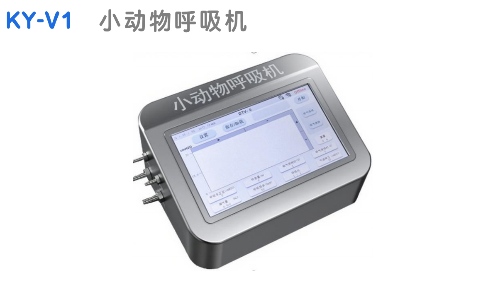
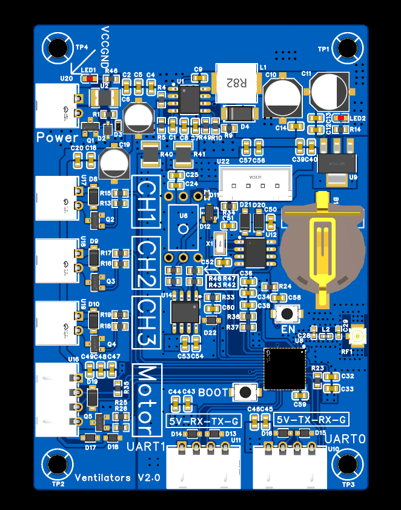
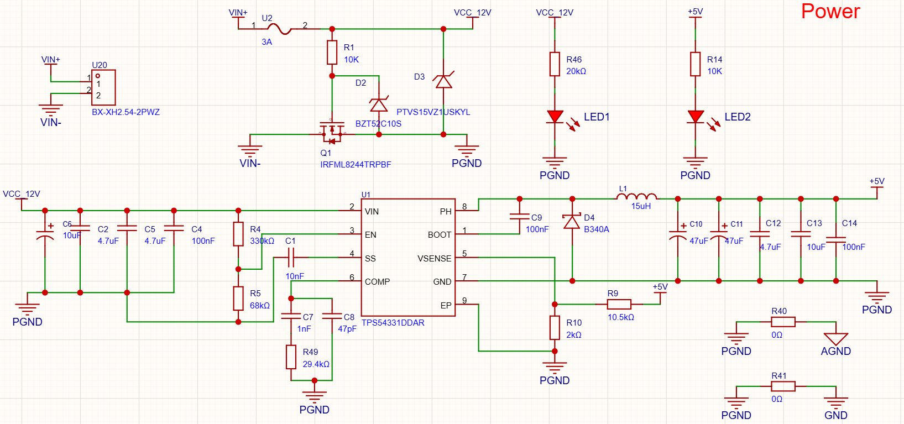
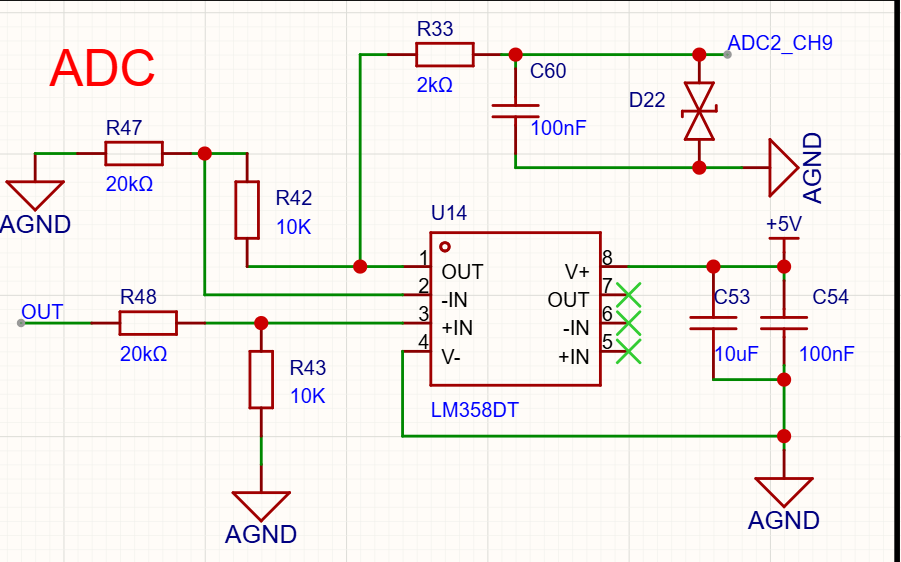
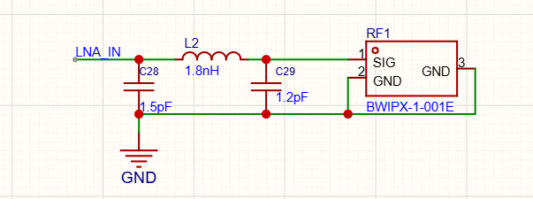
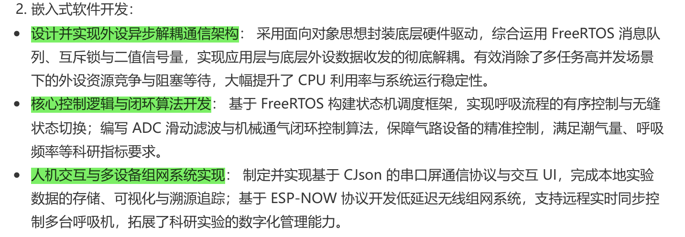
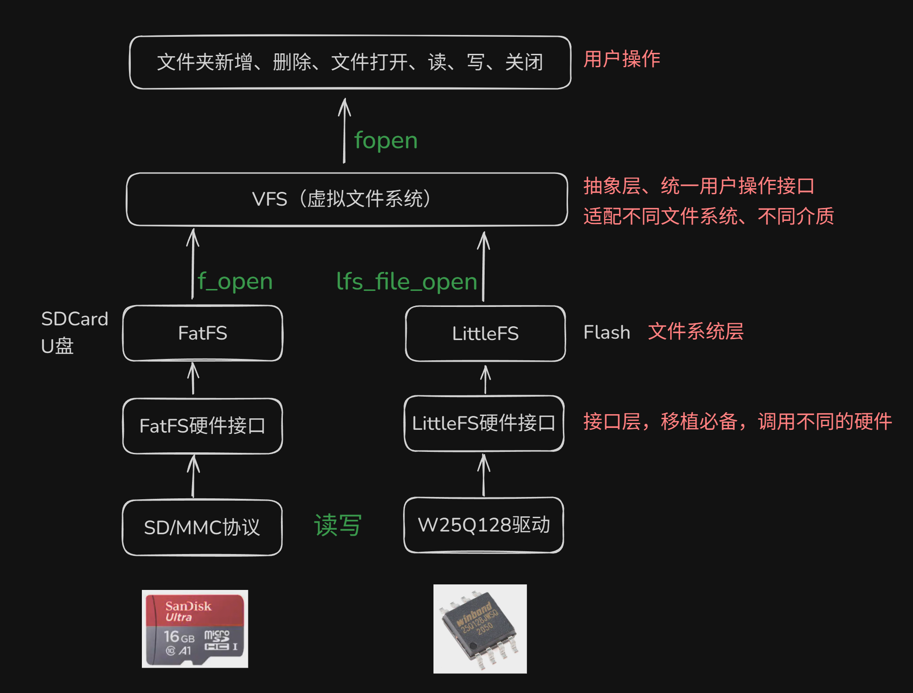
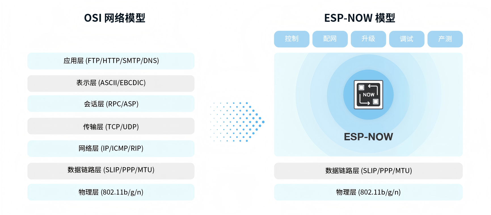

{kind=link}

{kind=link}

一、硬件部分
1.buck与防反接电路
{kind=link}

DC-DC电路之BUCK降压原理与公式推导分析 - 异步整流buck稳定性、性价比更好，由于续流二极管的存在，适合高电压小电流场景；同步整流buck电路效率更高，适用于大电流场景，但要掌握好死区时间，否则损坏mos管 - 二极管选用肖特基二极管，肖特基二极管开关速度快，压降低，损耗功率小 - 液态铝电解电容受温度影响大，ESR更大，可以滤除电源中较低频率的纹波；陶瓷电容受温度影响小，ESR小，可以滤除较高频率的噪声和纹波
MOS防反接电路 - 防反接电路栅极与源极之间的二极管是稳压二极管，主要是防止栅源之间电压过高损坏MOS管
2.差分放大电路
{kind=link}

放大倍数：
3.射频电路
{kind=link}

作用：阻抗匹配，避免信号反射。
二、软件部分
{kind=link}

1.外设异步解耦通信架构
通过消息队列、二值信号量、互斥量管理，实现高效可靠的外设数据传输。做到了各业务线程只管申请发送数据而不用等，外设线程自动排队发出数据包，业务层和底层驱动随时可以替换，系统运行效率更高。
2.核心控制逻辑与闭环控制算法开发
- 基于 FreeRTOS 构建状态机调度框架，实现呼吸流程的有序控制与状态切换 代码实现情况：已实现
- 任务创建与调度：在
main.c中，系统通过xTaskCreate创建了 4 个并发的 FreeRTOS 任务：UART_TX_Task和UART_RX_Task：负责处理串口屏的数据收发与解析。Breathe_Control_Task：核心的呼吸控制任务（以 5Hz/200ms 的周期运行）。adc1_task：专门负责传感器数据的实时采集。
- 状态机设计：在
Inc/main_control.h中定义了枚举类型的状态机（如操作状态Operate_State：包含initing,working,parameter_setting,init_success；以及 UI 相关状态）。 - 呼吸流程控制：在
Src/main_control.c的宏观任务和硬件定时器回调函数（Timer1CallBack和Timer2CallBack）中，系统根据设定的吸气/呼气比例（breathe_rate1/breathe_rate2）和呼吸频率参数，有序地切换气动阀门组（GPIO 25, 26, 27）的电平状态，实现了高精度的吸气和呼气周期循环。
- 编写 ADC 滑动滤波与机械通气闭环控制算法 代码实现情况：已实现
- ADC 滑动滤波：在
Src/adc_task.c中，系统通过 ESP32 的 ADC1 通道 1 采集压力传感器电压。为了过滤高频噪声，代码里实现了一个滑动均值滤波算法。程序会在单次循环内连续读取 10 次 ADC 值并累加求平均，然后转换为实际气压值。 - 机械通气闭环控制：在
Src/Motor.c中主要实现了对无刷风机/电机的控制闭环：- PWM 驱动控制：利用 ESP32 的 LEDC 外设，在 GPIO 21 上输出 20kHz 的高频 PWM 波（8 位分辨率），精细控制电机转速。
- 转速反馈检测：配置了 PCNT（脉冲计数器）对 GPIO 23 上的电机霍尔编码器信号进行捕获，周期性计算出电机的实时 RPM（转/分钟）。
- 潮气量控制算法：通过函数
get_motor_duty(float flow)，利用线性公式拟合（duty = ((-50 * flow + 85) * 255) / 100）将期望的气体流量（潮气量）转换为目标占空比进行输出。配合前述的高精度气动阀门控制，满足了科研设备 0.001-5mL 的微小潮气量标准。
3.人机交互与多设备组网系统实现
- 串口屏 CJson 通信协议与 UI 交互 代码实现情况：部分实现
- CJson 与串口屏通信：在
Src/UART_task.c中，系统初始化了两个硬件串口（波特率 115200）。接收到串口屏发来的数据后，底层通过自定义的环形缓冲区（Ring Buffer，500 字节大小）进行数据缓冲，防止丢包，随后调用cJSON_Parse库对指令进行解析。- 参数配置：解析出的 JSON 字段（如
{event, objid, type, val, vvs1}）被用于实时更新呼吸机的运行参数（如潮气量、呼吸频率、吸呼比等）。 - UI 数据可视化：系统会定时将采集到的气道压力、温湿度等数据，按照串口屏幕认可的绘图指令格式转化为字符串，通过
uart_write_bytes发送回屏幕（例如发送add s0.id类似的指令绘制呼吸波形）。
- 参数配置：解析出的 JSON 字段（如
JSON（JavaScript Object Notation）六种基本数据类型:
1 | { |
JSON基本语法规则:
1 | { |
- 实现离线数据存储
{kind=link}

利用 ESP32-S3 原生的 USB OTG 外设 配合 USB Host MSC (Mass Storage Class) 驱动来实现将实验数据以 CSV 格式保存到 U盘 等外部存储器。
初始化 USB Host 和 MSC 驱动并挂载 U盘:
1 |
|
应用层 CSV 数据写入逻辑: 当做机械通气闭环控制（如 Breathe_Control_Task）时，可以创建一个队列或者专门的数据记录任务，将实时压力、潮气量等科研指标附加到 CSV 文件末尾。
1 |
|
- 开发 ESP-NOW 无线通信功能，支持远程同步控制多台设备
ESP-NOW 是乐鑫开发的一种基于无连接的 Wi-Fi 通信协议（工作在数据链路层）；ESP-NOW 不需要连接路由器，上电即连，延迟极低（仅几毫秒），非常适合医疗科研设备的同步控制。
与传统 Wi-Fi 对比:
ESP-NOW 是基于数据链路层的无线通信协议，它将五层 OSI 上层协议精简为一层，数据传输时无需依次经过网络层、传输层、会话层、表示层、应用层等复杂的层级，也无需层层增加包头和解包，大大缓解了网络拥挤时因为丢包而导致的卡顿和延迟，拥有更高的响应速度。
{kind=link}

1 | 传统 Wi-Fi (TCP/IP 连接) |
实现代码对比：
1 | // 传统 Wi-Fi TCP 连接示例 |
系统通信回路架构： 上位机 <-> USB <-> ESP32 接收器 (网关) <-> ESP-NOW (2.4GHz) <-> 呼吸机 ESP32
软件实现方案：
初始化 Wi-Fi 与 ESP-NOW
1
2
3
4
5
6
7
8
9
10
11
12
13
void wifi_init_for_espnow(void) {
ESP_ERROR_CHECK(esp_netif_init());
ESP_ERROR_CHECK(esp_event_loop_create_default());
wifi_init_config_t cfg = WIFI_INIT_CONFIG_DEFAULT();
ESP_ERROR_CHECK(esp_wifi_init(&cfg));
ESP_ERROR_CHECK(esp_wifi_set_storage(WIFI_STORAGE_RAM));
ESP_ERROR_CHECK(esp_wifi_set_mode(WIFI_MODE_STA));
ESP_ERROR_CHECK(esp_wifi_start());
}注册 ESP-NOW 回调并配对
1 | // 接收回调函数 |
- 数据发送逻辑 (呼吸机 -> PC)
1 | void send_data_to_pc(char *json_str) { |